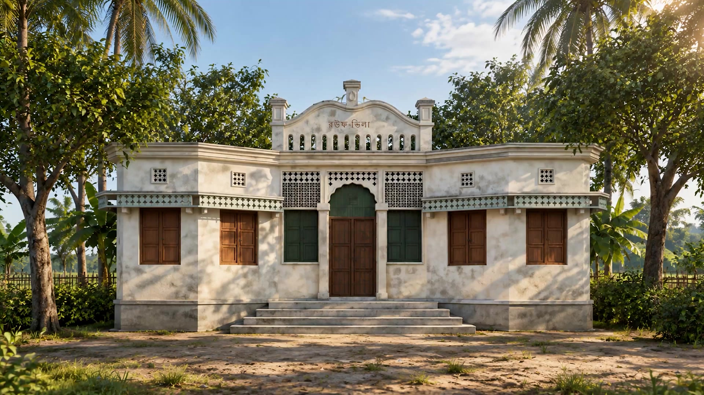
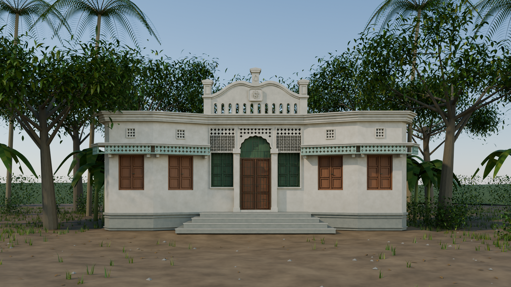

Owner · First generation
Abdur Rouf Chowdhury
The beginning of our family story

BANGLADESH · EST. 1947
Chowdhury Bari
A Family Home Since 1947
Rooted in one home, connected across generations.
Meet the family of Rouf Villa.
Owner · First generation
The beginning of our family story

Elder son
Son of Abdur Rouf Chowdhury

Grandson · Third generation
Son of Kamrul Ahsan Chowdhury

Younger son
Son of Abdur Rouf Chowdhury

Grandson · Third generation
Son of Nazmul Hassan Chowdhury
One home. Three generations. A story that continues.

Chowdhury Bari Since 1947
Built by Abdur Rouf Chowdhury